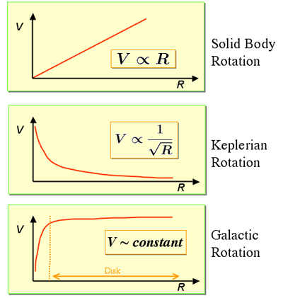
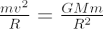
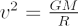

A rotation curve is a plot showing how orbital velocity, V, varies with distance from the centre of the object, R. Rotation curves can be determined for any rotating object, and in astronomy are generally used to show how mass is distributed in the Solar System (Keplerian Rotation curves) or in spiral galaxies (galactic rotation curves).

Example rotation curves for 1) a solid body, 2) the Solar System and 3) a spiral galaxy.
The rotation curves of galaxies can be measured using neutral hydrogen observations with radio telescopes. By equating the gravitational force to the centrifugal force we can estimate the mass inside a certain radius.

Hence:

where v is the rotation velocity, G is Newton’s gravitational constant, and M the mass inside a particular radius R.